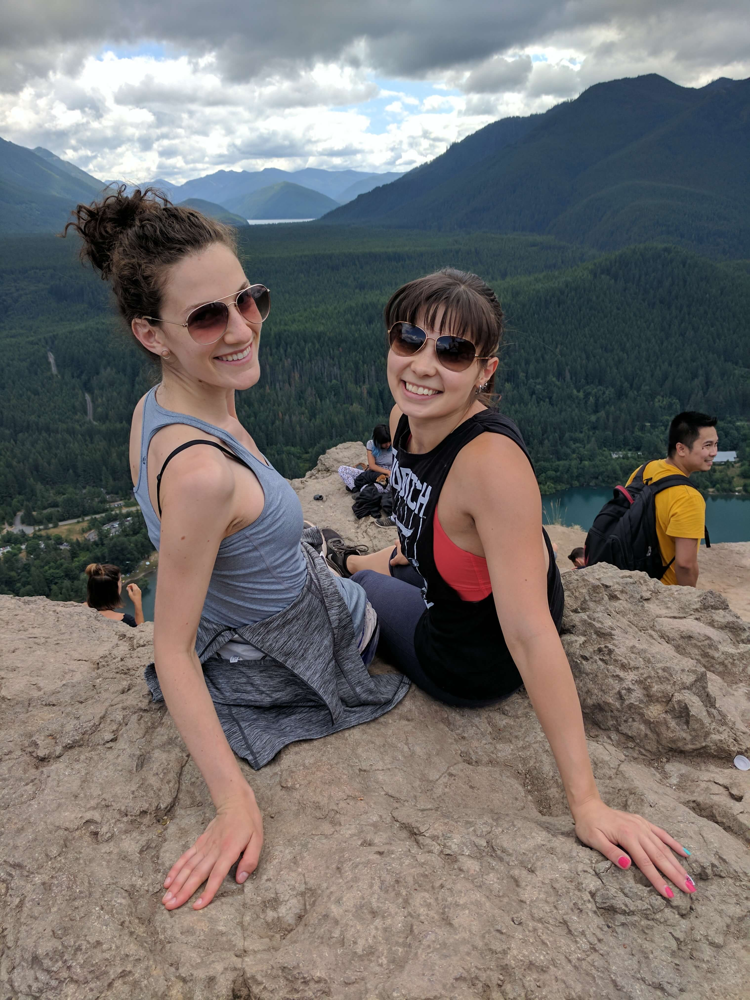
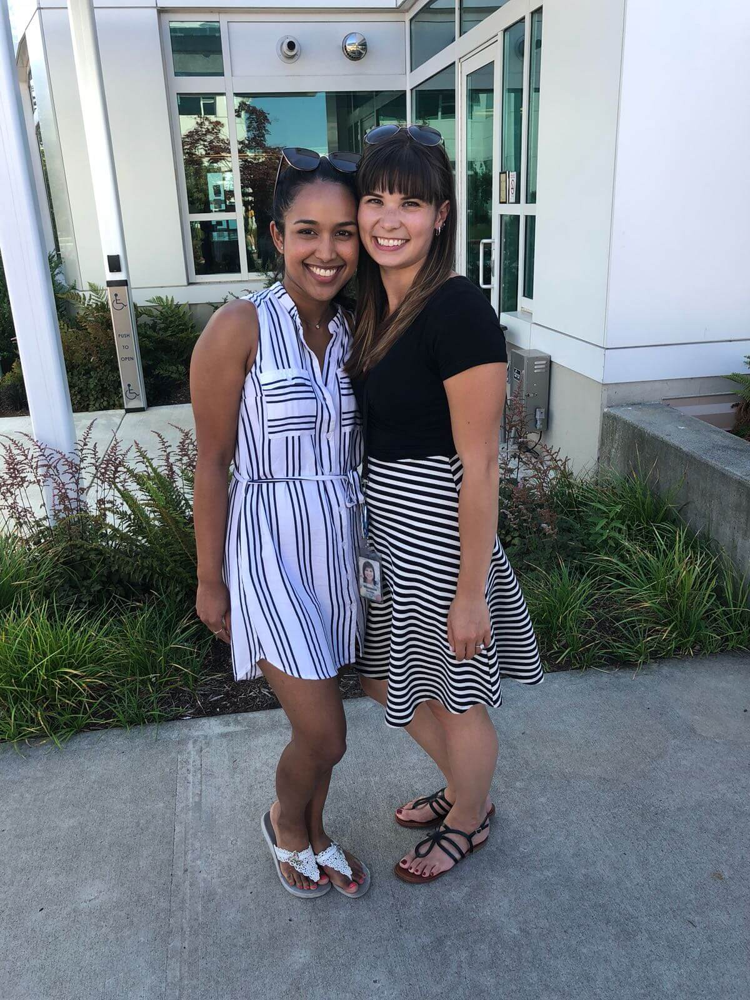

Wedding Party
Bridesmaids
Sydney Juzenas, Maid of Honor
Sydney is Shannon’s sister, and they are basically the same person. (Just ask them how much of their wardrobe matches). They made a pact at age 15 that they would be each other’s maid of honors, but Shannon could never ask anyone else anyways. Sydney is a dancer and will be the one making us all look like we have two left feet.
Eleanor Huynh
Eleanor and Shannon met in university and constantly exclaim how they can’t believe they didn’t meet earlier because they are such kindred spirits. Eleanor lives in Seattle near Shannon and is a knitting fairy who moonlights as a Microsoft PM.
Maia Smith
Maia and Shannon grew up on the same street and have been friends since high school, where they bonded during many sleepovers and backyard trampoline sessions. Maia is curing cancer (according to Shannon, anyways) as a bioinformatics engineer and is talented at every instrument she picks up.
Malinda Kulasekare
Malinda and Shannon clicked in a home ec class in Grade 8 and haven’t looked back since. In her spare time, Malinda is nurturing a growing army of plants and making her house the most Pinterest-worthy one Shannon’s ever seen. (She’s also rocking it as a project manager at Mobify).
Groomsmen
Tanay Gavankar, Best Man
Tanay and Jon met when they started working full time at Google in Mountain View, CA. (They also interned together, but through a cruel twist of fate managed to miss meeting each other for the entire summer.) Tanay left for greener pastures up north in Seattle, and Jon thought that was a great idea and followed along.
Andrew Bunyea
When they met as randomly paired roommates during their Google internship, Andrew and Jon quickly realized they have just about everything in common, including their love for music, math, and bizarre sketch comedy. They both refer to the other using the nickname Jim.
Joseph Tholany
Joe and Jon have known each other since their freshman year of college at Stony Brook University where they were suitemates and fast friends. When Joe isn't busy being overworked as a medical resident in Pittsburgh, he, Tanay, and Jon all play Path of Exile together.